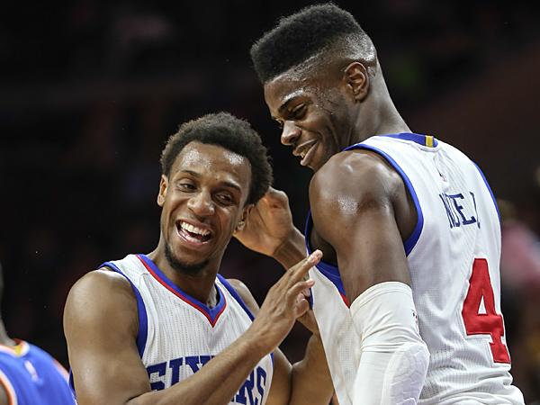

Nerlens Noel and Ish Smith: Perfect together
If you haven't noticed, Nerlens Noel and Ish Smith have developed into an exciting tandem for the 76ers.
Their latest teamwork was on display in a 113-111 overtime loss to the Los Angeles Lakers on Monday at the Wells Fargo Center.
Noel was on the receiving end of Smith's three assists.
The highlight came when Smith, the Sixers' point guard , found the standout rookie big man for a one-handed alley-oop dunk with 3 minutes, 45 seconds remaining in the first half.
MORE COVERAGE Forum: Does Hinkie have 76ers on right track? Sixers 2014-15 regular season schedule Buy 76ers jerseys, memorabilia, and other gear Latest Sixers videos
"I love Ish," said Noel, who finished with 19 points and 14 rebounds. "He's honestly, [in] my whole life, the first true point guard I ever played with.
"He's helped me. He's never had a player like me to really throw it up to. So we complement each other."
Smith was acquired off waivers Feb. 22, three days after the Sixers (18-57) traded Michael Carter-Williams to the Milwaukee Bucks.
Monday marked Smith's 20th game with the Sixers. And in the team's last 17 games, Noel's overall play has elevated. Noel has averaged 14.3 points, 11.2 rebounds, 1.8 assists, 2.4 steals, and 2.1 blocks during the stretch.
On the season, Noel is averaging 10 points, 8.2 rebounds, 1.7 assists, 1.8 steals, and 1.9 blocked shots.
"We do a great job of complementing each other, and he's always looking for me," the 6-foot-11, 223-pounder said of Smith. "That's something I love about him."
It didn't take long for the two to build a relationship. Noel and Smith talk about what they plan to do in certain situations before every game. Afterward, they review what they saw and how to convert more scoring opportunities.
"I never clicked with anybody that quick," said Smith, who's averaging 14.4 points and 6.9 assists in nine games as a starter. "But it's still a work in progress."
In the meantime, the fifth-year journeyman is finally able to show what he can do with extended minutes.
After he was not selected in the 2010 draft, he signed a free-agent deal with the Houston Rockets. Unable to get meaningful minutes while mostly playing behind quality point guards, Smith was traded to the Memphis Grizzlies in February 2011. He also saw limited action during short stints with the Golden State Warriors, the Orlando Magic, the Milwaukee Bucks, the Phoenix Suns, and the Thunder.
On Feb. 19, Oklahoma City traded him to the New Orleans Pelicans, who immediately released him.
"Nerlens is making me look good," Smith said. ". . . Take nothing away from Dwight [Howard] and Serge [Ibaka] and some of the bigs I played with, but Nerlens is just so active."
But will Nerlens continue to stay active for Smith past this season?
Smith's contract expires this summer.
Noel was asked if he wants the Sixers to re-sign his alley-oop partner.
"Oh my God. No question," he said. "I want him back. We need him."
White House visit: The Sixers toured the White House during their day off Tuesday. They are in Washington for a matchup Wednesday against the Wizards at the Verizon Center.
Nerlens With Ish
Since Ish Smith joined the Sixers last month, Nerlens Noel's stats have taken an upward trajectory. Here is a comparison of Noel's per-game averages overall this season and in the last 17 games with Smith:
- Pts.
- Reb.
- Ast.
- Steals
- Blocks
- Season
- 10.0
- 8.2
- 1.7
- 1.8
- 1.9
- with Smith
- 14.3
- 11.2
- 1.8
- 2.4
- 2.1